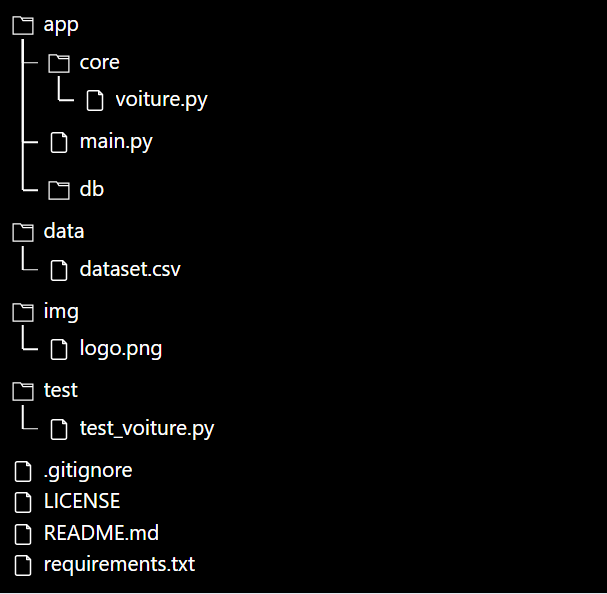
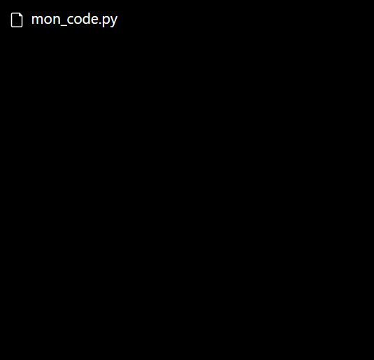
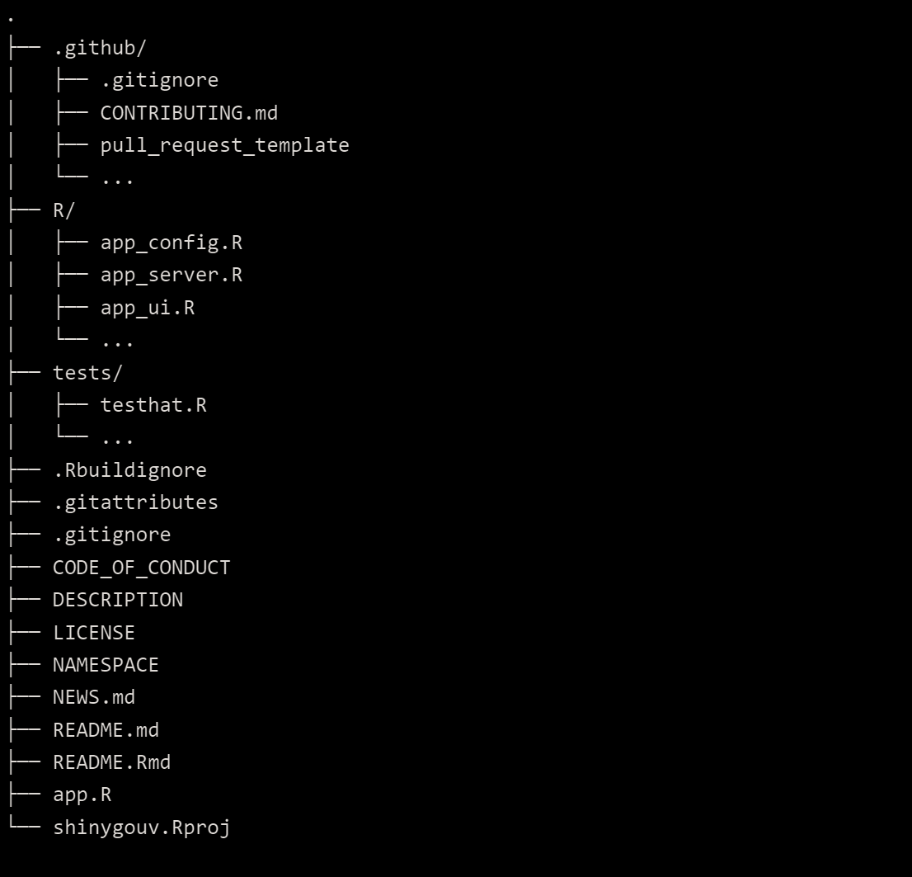

R & Python au CASD
Datascience
Le programme
- Organiser et gérer son projet
- Installation des dépendances
- Outils pour développer son application
Python : Utiliser et gérer son environnement
conda create --name projet_1 python=3.9 --offline Activation de l'environnement :
conda activate projet_1 Gestion du code et de l'arbre de fichier
Mon objectif est de vous convaincre que ceci :
est plus efficace que ceci :
Pourquoi ?

Et R ?
Bonne nouvelle : cela fonctionne aussi !
Utiliser Git
- Avoir les différentes versions de son code en suivant les changements
- Rétablir une version antérieure en cas de bug
- Travailler de façon collaborative ?
Au CASD
- Pas de synchronisation avec un répertoire exterieur
- Possibilité d'utiliser git de façon locale
Les dépendances
Fonctionnement :

R
install.packages("package_name") library("package_name")Python
pip install package_name pip install -r requirements.txt import package_nameAttention
L'ensemble des packages n'est pas disponible sur les serveurs internes !
En cas de paquet manquant : service@casd.eu
Développer votre application
- Les IDE
- Le code
Rstudio
- Pré-configuré pour R
- Beaucoup d'options spécifiques utiles
Visual Studio Code
- Très nombreuses fonctions de personnalisation
- Multi-language
- Autocomplétion/sauvegarde automatique/formattage automatique
Coder en Python
app/core/functions.py :def convert(age):
if age < 18 :
categorie = '[0-18]'
elif age < 30 :
categorie = '[18-35]'
elif age < 50 :
categorie = '[36-50]'
else :
categorie = '[51-110]'
return categorie
Coder en Python
app/main.py :# Imports
import os
import sys
from app.functions import convert
# Fonction principale
def main():
print("Bienvenue !")
age_utilisateur = input("Entrez votre age : ")
categorie = convert(age_utilisateur)
print(f"Vous appartenenez aux {categorie} ans !")
# Execution du code
if __name__ == "__main__":
main()
Coder en R
# Imports
library(shiny)
# Fenetre principale de l'application
ui <- fluidPage(
headerPanel("Mon Application Shiny"),
textInput("nom_utilisateur", "Entrez votre nom :", ""),
actionButton("bouton_soumettre", "Soumettre"),
verbatimTextOutput("message_bienvenue")
)
# Définition de la logique métier
server <- function(input, output) {
output$message_bienvenue <- renderText({
if (!is.null(input$nom_utilisateur)) {
paste("Bonjour,", input$nom_utilisateur, "!")
}
})